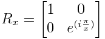

Quantum Circuit Simulator
Written by Davy Wybiral.
Contributions by Jiman Hwang
Purpose:
This is a quantum circuit simulator designed to function as a learning tool for anyone interested in quantum computing.
It has a friendly GUI for constructing and evaluating quantum circuits.
Rather than constructing one simple circuit, it's designed to support modular circuit design.
Any circuit you make can be compiled into a gate for use in other circuits.
The default gates in use were chosen because they appear frequently in literature.
There does seem to be a mix of conventions regarding rotation gates. To avoid confusion,
this is the matrix used to construct all of the Rx gates used by this application:

The basics:
- Click on the qubits to the left of the circuit wires to toggle the input state.
- Click on a quantum gate (above the circuit wires) to select that gate type.
Then click on a circuit wire to place the selected gate there.
- For gates over multiple qubits, such as the swap or QFT gates, click and drag across desired qubits.
- Right clicking will delete a gate.
Controls:
- Any gate can be made into a controlled version of itself by selecting the control gate (the black dot)
and dragging from the control qubit to the target gate.
- Dragging a control onto an X gate will result in a CNot gate.
- Multiple controls can be added to a single gate.
- Dragging two controls to an X will result in a Toffoli gate.
- Right clicking on a control will remove it from the gate without removing the gate itself.
Evaluate:
- You can evaluate your circuit by either clicking the Evaluate option in the Circuit menu or by pressing Enter.
- Evaluating the circuit will apply the circuit to the current input state (on the left of the circuit wires)
and display a table of resulting probabilities (on the right of the circuit wires).
- Each line in the probabilities table is of the form "a+bi|x> p%" where "a+bi" is a complex number (the amplitude),
"x" is a possible binary state for the entire system, and "p" is a percent probability that a measurement would result in that state.
- By default, states with 0% probability are hidden. Click "(show all)" above the table to display zero and nonzero probabilities.
Compile:
- You can compile your circuit by either clicking the Compile option in the Circuit menu or by pressing Ctrl+S.
- Compiling your circuit will create a gate containing the visible circuit to be used in larger circuits.
- Once compiled, you can double-click on the gate in the toolbar to open it's circuit.
- Saving a gate with the same name as an existing one will overwrite the existing gate.
This does not update gates that use this circuit. They will need to be "recompiled" too.
Exporting:
- You can export all of the gates you've created into a JSON format by clicking on the Export JSON
option in the Workspace menu.
- This exported JSON text can be reimported at a later time by clicking on the Import JSON
option in the Workspace menu and then pasting the JSON text into the prompt.
- You can export the circuit diagram as an image by clicking the Export Image option in the Circuit menu.
- You can export the circuit as a CSV matrix of complex values by clicking the Export Matrix option in the Circuit menu.
Resizing:
- You can resize your circuit by changing the Qubits setting in the Circuit menu.
- If the new size is smaller than the existing circuit, gates that don't fit will be removed.